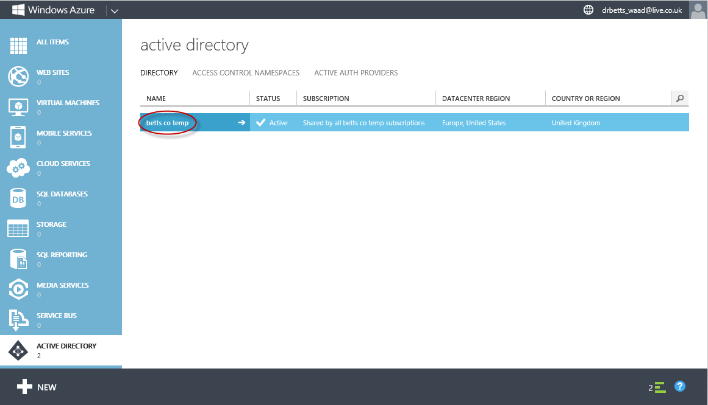
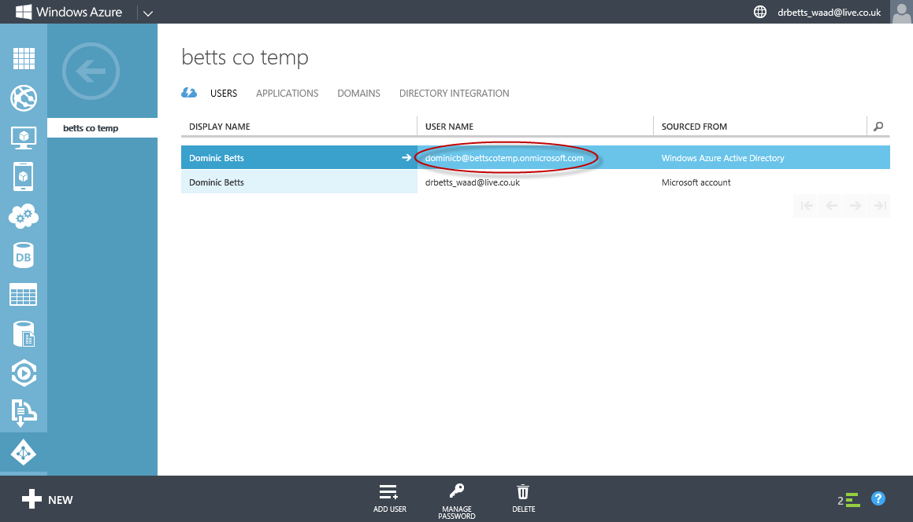
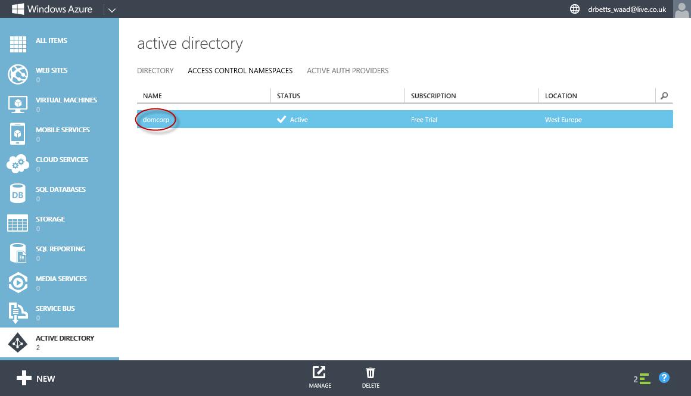

There are two initial configuration tasks that you must complete manually in the Windows Azure Portal that at the time of writing did not appear to be scriptable.
1. Create your Windows Azure Active Directory (WAAD) tenant and add a new user in the "Global Administrator" role
To create your WAAD tenant and create an administrative user you can follow the instructions in the section Create a New Directory Tenant and Add a User on the page Adding Sign-On to Your Web Application Using Windows Azure AD.
Note: Make a note of your WAAD tenant name, you will need it when you customize the PowerShell scripts for your setup.
There are some important points to be aware of when you complete these steps:
- Once you have created your WAAD tenant, you cannot change its name or delete it from your Windows Azure subscription. Make sure you choose a sensible name and one that you will not require later!
- The tenant you create defines a domain called yourdomainname.onmicrosoft.com.
- You will be using the user in the "Global Administrator" role when you run some of the PowerShell scripts later. You should change the automatically assigned password before you try to use the account from PowerShell by logging on at https://login.microsoftonline.com/login.srf.
- When you have completed these steps, you will be able to use PowerShell to complete the remaining configuration steps for WAAD.
2. Define an Access Control Service (ACS) namespace
To create your ACS namespace you can follow the instructions on the page How to: Create an Access Control Namespace.
Note: Make a note of your ACS namespace name, you will need it when you customize the PowerShell scripts for your setup.
These screenshots illustrate what you should see in the Windows Azure Management portal after you have completed these configuration steps.
The WAAD Tenant

The WAAD global administrator

The ACS namespace
